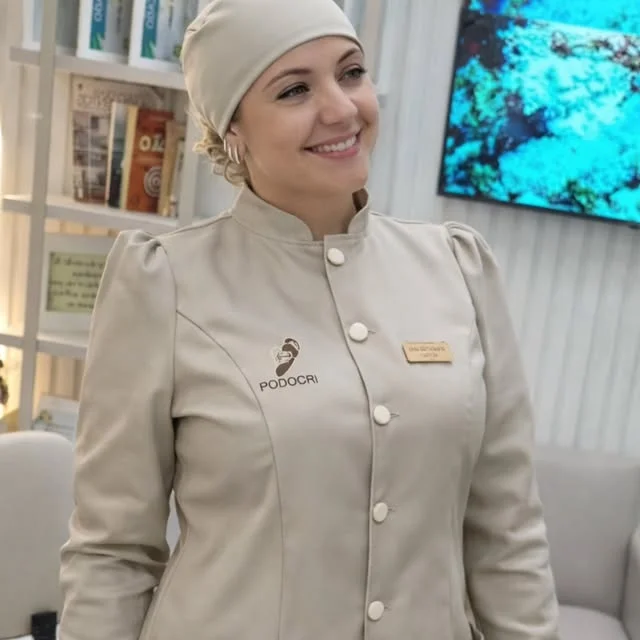

Unha encravada
Tratamento da unha que machuca o canto do dedo, com orientação de corte.
Avaliação do pé à postura, com podólogas e biomedicina no mesmo consultório. Unha encravada, fungos, calos, verrugas, dor no pé e podologia infantil, com atendimento até as 20h às terças e quintas.
Toque em um ponto do pé para ver o que a equipe trata ali. Vire o pé para ver a sola.
Todo atendimento começa por uma avaliação dos seus pés. Toque em "Agendar" e o tratamento já entra na sua mensagem.
Tratamento da unha que machuca o canto do dedo, com orientação de corte.
Avaliação e acompanhamento da onicomicose, com o cuidado indicado para o seu caso.
Remoção cuidadosa e orientação sobre calçado e pisada.
Tratamento de verrugas, incluindo a cauterização da verruga plantar.
Atendimento para crianças, com paciência e linguagem que elas entendem.
Cuidado completo de unhas e pele para manter os pés saudáveis.
Relaxamento e alívio para pés cansados depois do dia.
Podoscopia e análise da pisada para entender a origem de dores e calosidades.

A Podocri é uma clínica de podologia no Centro de Criciúma. O cuidado vai além da unha: a equipe avalia do pé à postura para tratar a dor, prevenir e acompanhar você ao longo do tempo.
Escolha o atendimento e o melhor período. A mensagem chega pronta no WhatsApp da Podocri, onde a Helena, nossa assistente, confirma o horário com você.
Você escolhe o atendimento e o período. A confirmação do horário chega pelo WhatsApp.
A podóloga avalia seus pés, do pé à postura, e explica o que será feito antes de começar.
Atendimento no consultório e, quando preciso, o retorno já combinado.
| Segunda | 9h às 19h |
| Terça | 9h às 20h |
| Quarta | 9h às 18h |
| Quinta | 9h às 20h |
| Sexta | 9h às 17h |
| Sábado e domingo | Fechado |
Trabalha o dia todo? Às terças e quintas o atendimento vai até as 20h.
Ed. Sonata, sala térrea
R. Dr. José de Patta, 366 · Centro · Criciúma/SC